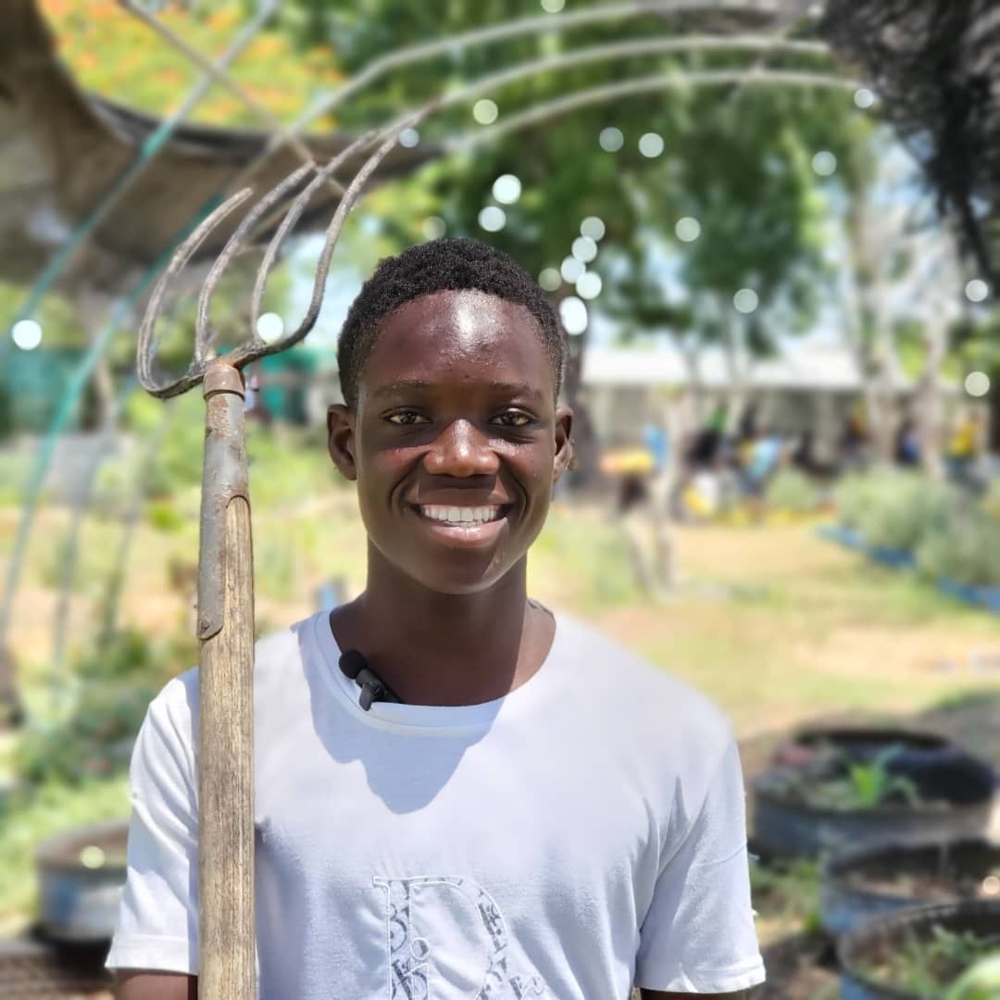
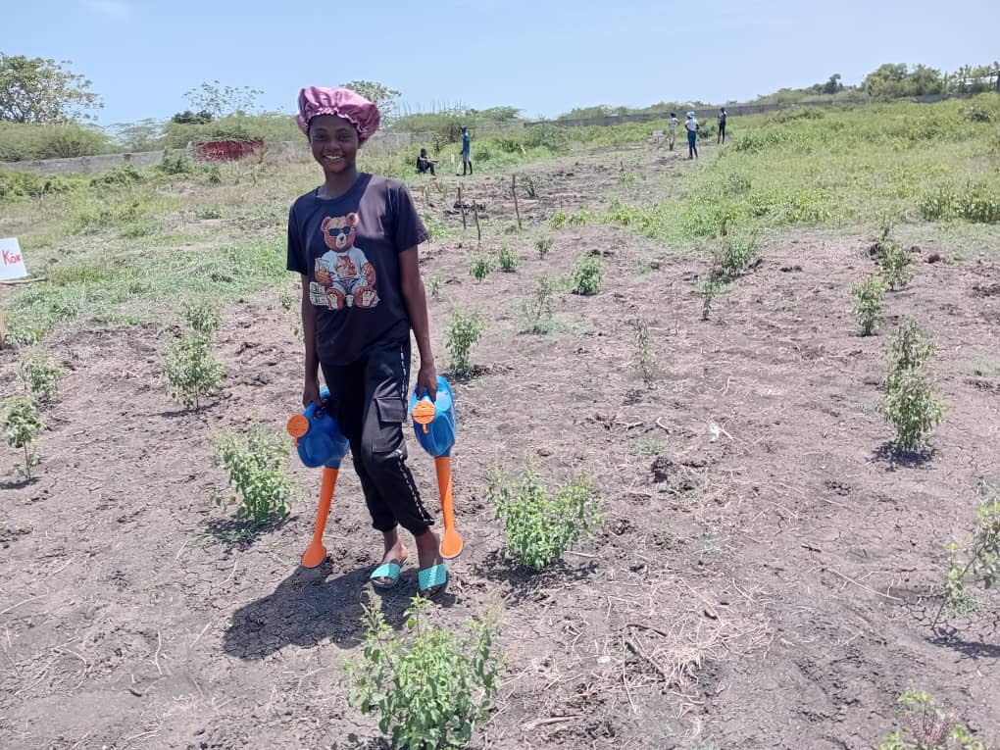

Job Power · KONKRET, since 2019 · Haiti
Jèn ayisyen yo bezwen travay
Just 14 cents of every dollar from large donors reaches Haiti. The diaspora, meanwhile, sends home more than $4 billion a year... and almost all of it gets spent and disappears, building nothing that lasts. Job Power changes that: fund a real Haitian agriculture farm (TapTap), put young people to work on their own soil that has long sat fallow, and receive what they produce. A purchase, not a donation.

Pick a Haitian TapTap, fund it, and receive what it produces... cassava flour, to start. Not a donation: you are buying a product, and most of your money builds up the TapTap that made it. You see exactly what it did.
Browse TapTapsA church, a diaspora association, a company. Back a whole TapTap and put ten young people or more to work, with reporting you can show your own people.
Become a Group SponsorYou have land, equipment, or a youth group ready to work. Tell us what you have and the one thing you need... we handle the matching.
RegisterSAKALA Haiti has been on the ground in the North since 2003; its cooperative KONKRET has organized youth employment since 2019. We are not an aid organization. Aid arrived, disappeared, and left little behind... barely 14 cents of every dollar from large donors ever reached Haiti. Deliver that same dollar directly and 85 cents lands. We are building the opposite: money that stays in Haiti, in the hands of the people doing the work.
We know the TapTaps across Haiti... what they have, what they could do, and the one thing each one needs to start. We match them with people and groups abroad who buy what they produce. The money doesn't trickle, it lands... and most of it builds up the TapTap itself, so the work keeps paying after the first season. Every job created is an act of economic sovereignty.
More about SAKALA Haiti
One day, every TapTap's harvest ships to your door as a single box. We are still building the TapTaps that fill it. See what's growing →